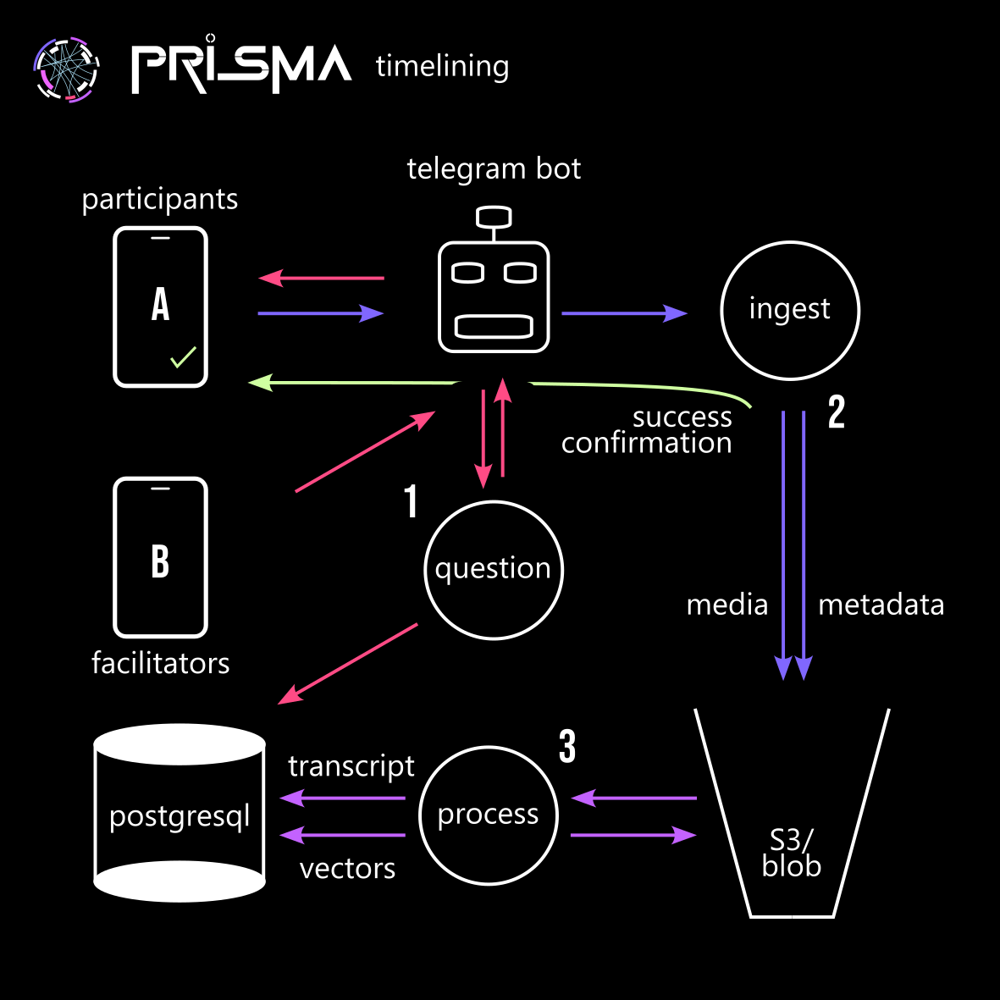
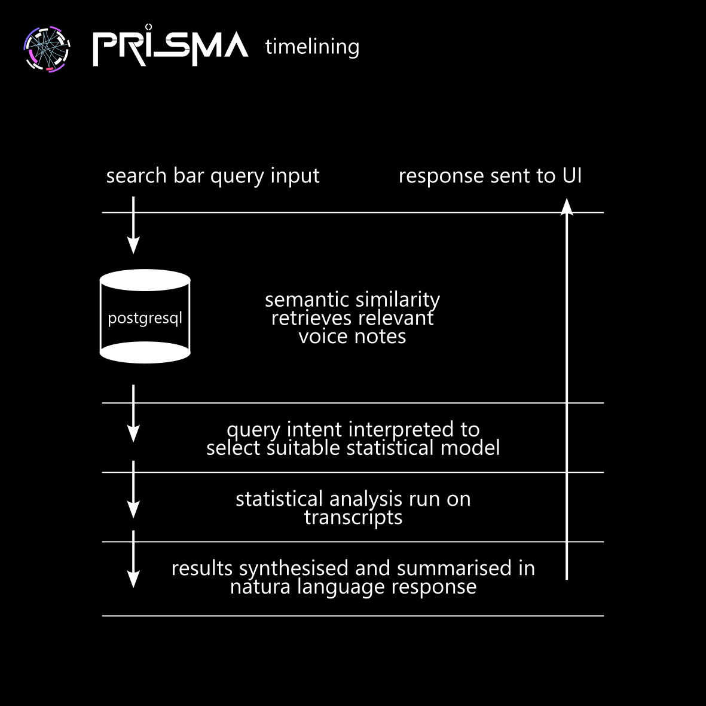

The timelining system is a voice-first analytics pipeline that captures Telegram voice notes, transcribes them, generates vector embeddings, and presents insights via a timeline UI. It prompts reflection, analyzes participation, and synthesizes insights for participants, facilitators, and evaluators.
The system has three stages:
- input protocol
- Data Preparation
- Insight Generation
We've previously tested practice-based Telegram bots, and the front-end is already in progress. Development will proceed step by step, with the most effort focused on data preparation.
Insights are dynamically generated through UI interactions, enabled by clustering, tagging, and topic evolution. Users request insights via natural language input, combining LLM-based semantic search with statistical analytics. A set of defined “lenses” (statistical methods) will refine timeline entries for relevance.
1. Input Protocol: Ingest, Processing and Question APIs¶
The timelining bot can be added to multiple group chats, distinguishing between circles of purpose and trust (e.g., facilitator circle, hub team, participant groups). Vercel functions handle API services, ensuring seamless connections and concurrency.
Purpose¶
To design the data solicitation, capturing and storage mechanism.
Core Capabilities¶
- Capturing inputs via Telegram (primarily voice) and storing it.
- Designing questions in alignment with the daily agenda (which will later be used to contextualise the reflections by the content of the day: workshops, excursions, visitors etc.)
- Sending regularly scheduled or facilitator-driven questions.

Ingest & Processing System¶
Overview¶
The bot will collect participant entries, enabling tailored user experiences and meaningful insights.
Implementation Approach¶
The first priority is a simple and reliable ingest system. Post-processing, including vector embeddings, response generation, and timeline contextualization will happen after that.
Ingest Workflow¶
- Users send voice notes in the timelining Telegram chat.
- The bot detects messages and sends them to the ingest API.
- The ingest API saves audio and metadata to AWS S3.
- The processing API transcribes the audio, generates vector embeddings, and stores them in PostgreSQL.
- Data is secured for insights and retrieval.
System Overview¶
Telegram Chat Interface¶
- User Interface: Users interact via Telegram voice notes.
- Bot Functionality: The bot listens for new messages and sends data to the API.
Ingest Service (timelining_ingest)¶
- Functionality: Receives data, downloads audio, and stores it with metadata in AWS S3.
- Hosting: Hosted on Vercel Functions for scalability.
Processing Service (timelining_process)¶
- Transcription: Converts voice notes into text.
- Vector Embeddings: Uses models like BERT or OpenAI for semantic search.
- Data Storage: Transcriptions and embeddings stored in PostgreSQL with vector extensions.
- Large File Handling: Splits large audio files to ensure proper processing.
- Hosting: Hosted on Vercel or another serverless platform.
Data Storage¶
- AWS S3: Stores raw audio files and metadata.
- PostgreSQL (Vector Extension): Stores transcriptions and embeddings for efficient retrieval.
Key Components¶
- timelining_bot: Listens for voice notes and updates the API.
- timelining_ingest: Processes voice notes and stores them in S3.
- timelining_process: Transcribes, generates vector embeddings, and stores data in PostgreSQL.
- AWS S3 Bucket: Holds raw audio and metadata.
- PostgreSQL Database: Manages transcriptions and embeddings for semantic search.
Question System¶
Overview¶
Facilitators can send reflective questions via the existing Telegram bot, which stores them in the PostgreSQL database alongside participant responses. These questions can be scheduled, manually triggered, or contextually generated based on ongoing discussions.
Workflow¶
- Facilitator sends a question in the timelining Telegram chat using a predefined format or command (e.g., /ask What inspired you today?).
- Bot detects the question and forwards it to the timelining_questions API.
- API validates and stores the question in the PostgreSQL database with metadata (timestamp, facilitator ID, group ID, optional tags).
- Scheduled or AI-driven questions can also be added to the database and posted automatically at set intervals.
- Participants respond, and their answers are linked to the corresponding question for contextual analysis.
2. Preparation: Data Tagging, Analysis & LLM Interfacing¶
Purpose¶
To generate further data layers that can be used by conceptual & statistical models during the insight-generating stage.
Core Capabilities¶
The data preparation stage enriches raw transcriptions by generating structured data layers that enhance statistical analyses.
- Clustering & Grouping: Identifies patterns in conversations, grouping related voice notes by themes or participant engagement.
- Tagging & Annotation: Applies metadata tags (e.g., topics, sentiment, key terms) to enable refined filtering and retrieval.
- Topic Evolution Tracking: Detects how themes develop over time, mapping the trajectory of discussions.
Analysis Framework¶
The analytical logic for the bot is deeply rooted in the [[multi-capitals framework]], which serves as the primary lens for tagging, analysing, and interpreting journaling data and other content. This framework underpins the evaluation of flows of capital—both tangible and intangible—across systemic, group and individual levels. By layering the analysis, starting with flows of capital, moving through regenerative systems shifts, group facilitation methodology, and down to individual layers, the bot provides a comprehensive understanding of personal development, co-creation efficacy, and systemic change.
The multi-capitals framework identifies various forms of capital that individuals, groups, and systems draw upon and build through their interactions as part of the Action Learning Journey. These include
- Natural Capital: Ecological assets such as ecosystems, biodiversity, and natural resources.
- Social Capital: Relationships, networks, trust, and social cohesion.
- Cultural Capital: Shared values, traditions, knowledge systems, and cultural practices.
- Human Capital: Skills, knowledge, emotional intelligence, and personal development.
- Economic Capital: Financial resources and economic assets.
- Built Capital: Physical infrastructure such as buildings, tools, and technology.
- Political Capital: Influence within decision-making processes and governance structures.
- Spiritual Capital: Represents the intangible values, beliefs, and sense of purpose that guide individuals and communities.
Implementation Approach¶
The system facilitates a comprehensive, AI-aided exploration of journaling data using a multi-capitals framework, which analyses tangible and intangible flows of capital (such as social, cultural, and economic) across individual, group, and systemic levels. Users submit natural language queries, which are semantically matched to voice notes through vector embeddings. The voice note transcripts are analyzed for trends and changes in capital flows over time, and insights are presented alongside relevant voice notes in a timeline UI.

- User Query Input:
- Users enter queries in natural language, which are parsed and analysed using NLP techniques to identify key entities and context.
- Semantic Search:
- Queries are transformed into vectors, which are matched with relevant voice notes based on semantic similarity, not just keywords.
- Statistical Analysis on Retrieved Data:
- Statistical models identify trends, patterns, and shifts over time, including sentiment analysis, topic modelling, entity evolution, and trend detection. Voice notes are pre-tagged with themes, and dynamic tagging highlights relevant notes.
- Generating Insights:
- The system synthesizes insights from sentiment analysis, topic modelling, and trend detection, providing high-level summaries such as "Trust evolved from positive to critical discussions by mid-period" or "Social capital surged after the opening ceremony."
- Handling Unsupported Queries:
- The system validates queries before processing, providing a clear response for unsupported requests and prompting users for more specific queries.
- Presenting the Timeline and Voice Notes:
- Insights are displayed in the timeline UI, allowing users to filter by query, sentiment, and tags. Users can explore specific voice notes and view metadata such as sentiment scores and associated tags.
3. Insight Generation & Timeline UI¶
Purpose¶
The insight generation phase takes a natural text query from the UI and generates insightful responses, updating the timeline to filter for relevant entries accordingly. A single interactive interface will allow users to browse, search, and interpret voice notes along a timeline.
Core Capabilities¶
The interface provides:
- A visual timeline of voice notes, mapped chronologically.
- Search & filtering tools to surface relevant voice notes based on natural language queries.
- AI-assisted insights (statistical analysis, topic trends, sentiment shifts).
- Multi-layered context views (raw audio, transcription, metadata, and analysis).
This ensures AI helps illuminate patterns, but the final interpretation remains with the human user.
Design Principles¶
- Preserving Context:
Provide multi-layered views with audio, transcripts, metadata, sentiment trends, and key topics. Enable semantic and keyword-based searches. - Retaining Nuance:
Show sentiment distributions and multiple tags for entries. - AI as a Tool, Not Authority:
Ensure AI is explainable with reasoning and alternative tags. Users can override AI tags to improve relevance. - Balancing AI and Human Input:
Allow comparison of NLP models and AI uncertainty, empowering users to explore insights interactively. - Supporting Human Exploration:
Provide timeline visualizations, statistical overlays, and multi-modal queries for exploring trends over time. - Transparency and Iteration:
Display raw data with AI as optional support, encouraging users to refine insights through comparisons and adjustments. - Human-Driven Interpretation:
Final insights are generated by users, not AI.